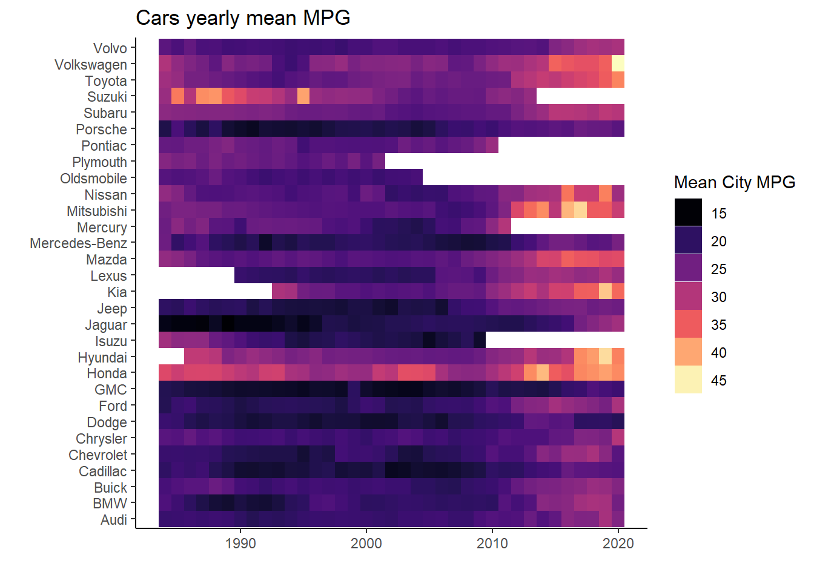

Load the packages and data!
library(tidyverse)
library(viridis)
cars <- readr::read_csv("https://raw.githubusercontent.com/rfordatascience/tidytuesday/master/data/2019/2019-10-15/big_epa_cars.csv")Clean the data and plot it
big_makers <- cars %>%
select(make, model, year, UCity,UHighway) %>%
group_by(make) %>%
tally() %>%
arrange(-n) %>%
head(30) %>%
pull(make)
cars_clean <- cars %>%
select(make, model, year, UCity,UHighway) %>%
filter(make %in% big_makers)
cars_heat <- cars_clean %>%
group_by(make, year) %>%
filter(!is.na(UCity)) %>%
summarise(
mean = mean(UCity)
)
ggplot(cars_heat, aes(x= year, y= make))+
geom_tile(aes(fill = mean))+
scale_fill_viridis(option = "magma")+
theme_classic()+
labs(title = "Cars yearly mean MPG",
x= "",
y = "")+
guides(fill=guide_legend(title="Mean City MPG"))